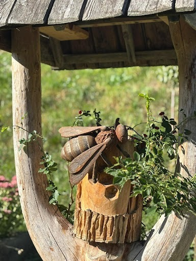
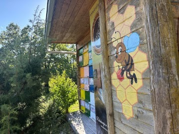
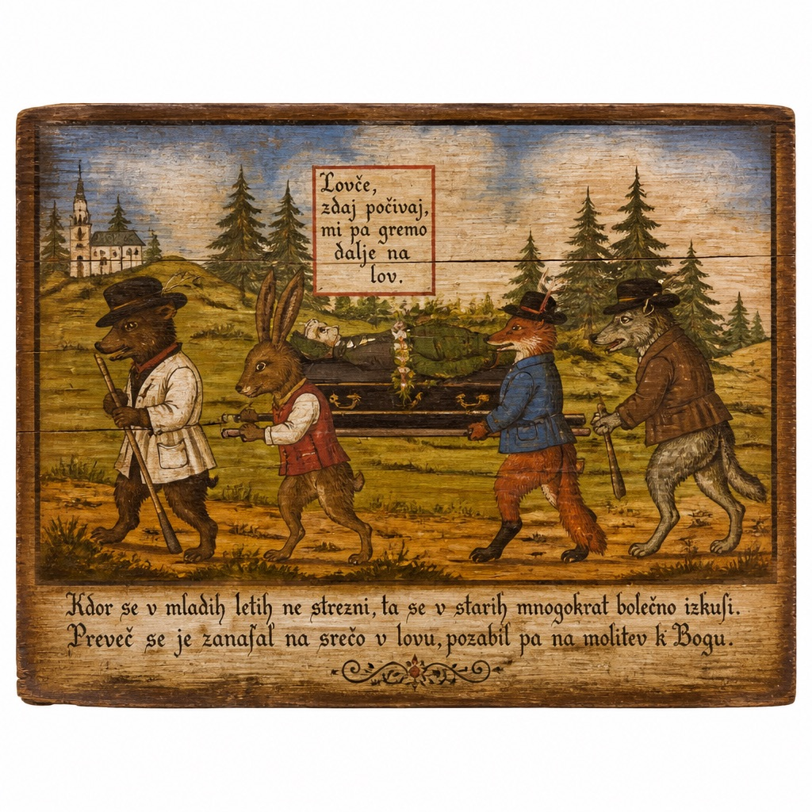
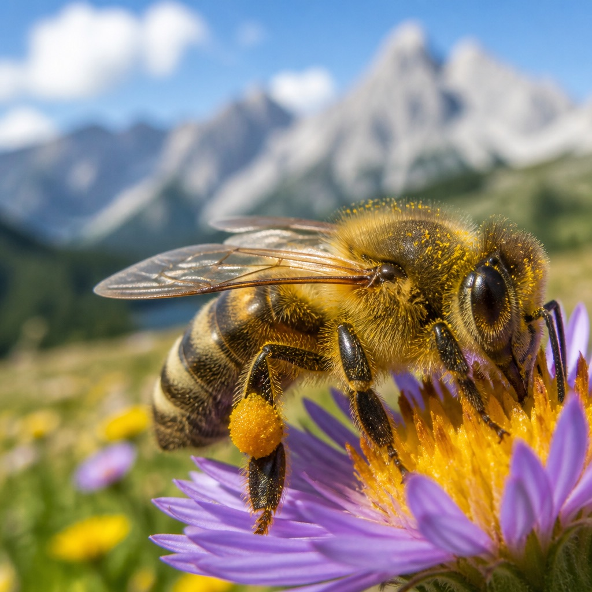
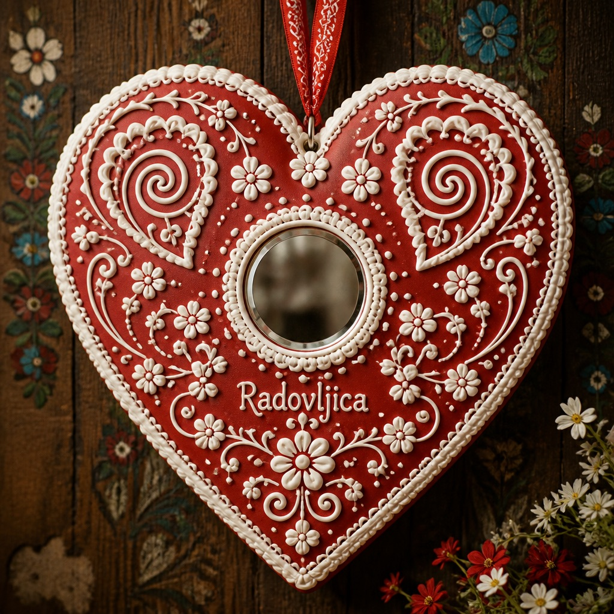
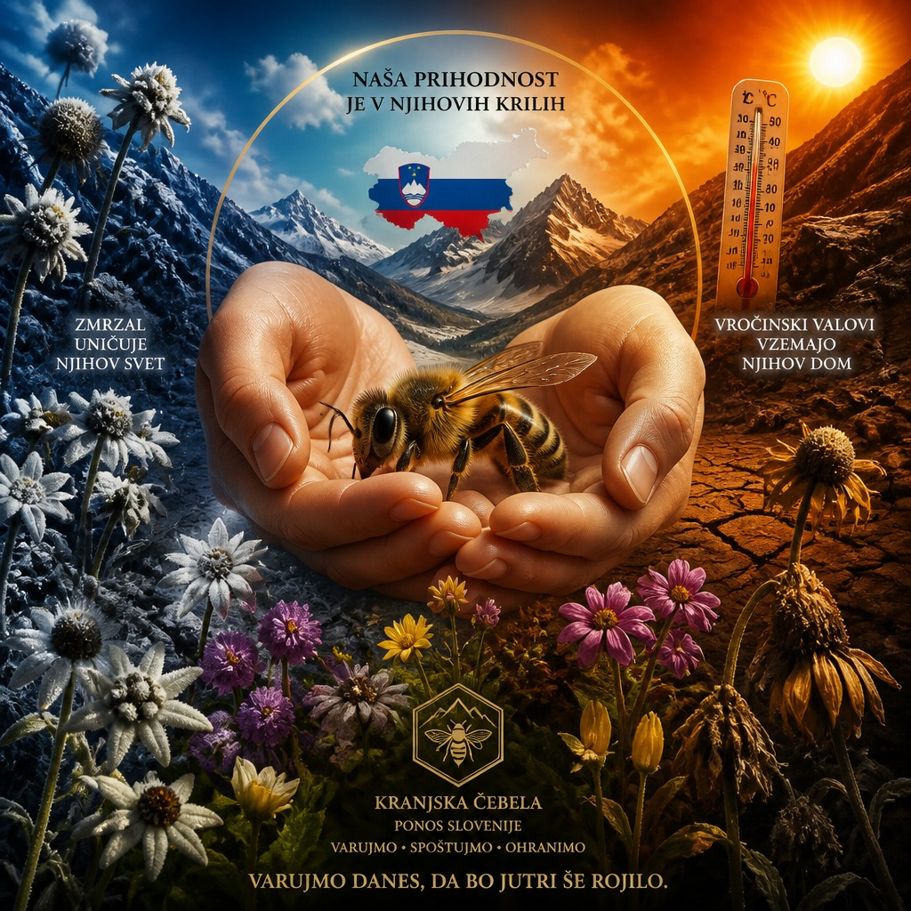

在朱利安阿爾卑斯山的雪峰之下，這座中世紀古城孕育了全球第二大蜂種「卡尼鄂拉灰蜂」、現代養蜂學先驅安東·揚夏，以及全世界獨一無二的彩繪蜂箱板民俗藝術。
養蜂在斯洛維尼亞不只是一項傳統產業，而是一種與自然共生的哲學，更被列為聯合國教科文組織非物質文化遺產。
原生於喀斯特高原與阿爾卑斯山，以極其溫馴、耐寒抗飢、強大定向與高產蜜量著稱。斯洛維尼亞以國家法律嚴格保障其血統，禁止引進外來蜂種，維護生物多樣性。
為喚醒全球對授粉昆蟲生態危機的重視，斯洛維尼亞養蜂協會向聯合國提案，正式將現代養蜂之父安東·揚夏的誕辰（5 月 20 日）指定為全球共同節日。
18 至 20 世紀初發展出的「彩繪蜂箱板」，將聖徒守護、農村逸趣、魔鬼誘惑與動物諷刺生動呈現，成為全人類民俗學中絕無僅有的視覺奇觀。
斯洛維尼亞國寶蜂「Kranjska siva（灰蜂）」，以極度溫馴、耐寒抗風、早春爆發性繁育與長吻採蜜能力享譽全球。
原生於喀斯特石灰岩高地與朱利安阿爾卑斯山脈。不同於義大利蜂亮麗的黃黑條紋，灰蜂以低調沉穩的暗褐色與銀灰絨毛融入高山岩石地景，擁有所有西方蜜蜂亞種中最頂尖的越冬耐寒力。
採集自高海拔冷杉針葉甘露，呈深琥珀黑糖色澤，富含松針精油香與礦物質，不結晶且具極高多酚。
阿爾卑斯原始林經典，帶有樹脂芬芳與麥芽回甘，斯洛維尼亞家庭常用於舒緩呼吸道不適。
採集自林哈特古城廣場的百年椴樹，透著淡淡金黃微綠，散發薄荷般清爽的草本清涼氣息。
見證傳統木工巨型蜜蜂雕像，以及座落於綠意山林間的經典彩繪木造蜂房（Čebelnjak）。

在林哈特古城外圍花園與蜂房入口，以粗獷原木細膩雕刻出的巨型卡尼鄂拉工蜂。背部紋理、羽翼脈絡與木質基座相映成趣，象徵斯洛維尼亞人對蜜蜂的由衷敬意。

典型斯洛維尼亞森林邊緣的養蜂小屋。右側牆面手繪童趣蜜蜂採蜜圖騰，正面整齊排列各色彩繪蜂箱巢門，在陽光照拂下，數萬隻工蜂正繁忙地往返採集高山花蜜。
每塊蜂箱板都是蜂巢的門戶，更是 18 世紀村民的情感寄託。讓我們解讀最知名的三大經典主題：

最著名的反轉諷刺畫！野兔抬著棺材、狐狸高舉十字架、鹿群為死去的獵人奏響哀樂，展現了農民對自然生態循環的詼諧敬畏。

在險峻高山花海中飛舞的灰蜂，採集雪絨花、高山薔薇與冷杉蜜露，蜂箱板經常細繪蜜蜂與聖安東尼聖徒的庇佑畫面。

純蜂蜜調配揉捏烘烤，紅色甜心正中央鑲嵌一面小鏡子。在市集裡送給心上人：「當你望向這顆心，你便看見了我心裡只有你。」
從布雷茲尼察的農村少年，到哈布斯堡女皇親授的帝國首席養蜂大師。
安東·揚夏出生於養蜂世家，從小敏銳觀察卡尼鄂拉蜜蜂的生活習性，並兼修精緻繪畫技能。
特蕾莎女皇深知養蜂對國家農業之重，在維也納奧格滕宮殿建立皇家養蜂學校，揚夏破格受聘為全帝國首任養蜂教師。
率先以科學實證女王蜂與雄蜂在空中交尾的真相，並發明可多層堆疊、便於馬車載運轉場採蜜的「揚夏蜂箱」。
為紀念安東·揚夏在現代養蜂業的卓越貢獻，聯合國大會無異議通過，定每年 5 月 20 日為世界蜜蜂日。
漫步於中世紀林哈特廣場、探訪地窖薑餅手作坊、養蜂博物館與揚夏故居。
走進傳統木造蜂舍（Čebelnjak），空氣中瀰漫著蜂蠟、蜂膠、花粉與高山精油交織的溫暖香氣。在斯洛維尼亞，人們透過吸入蜂巢微氣候空氣、聆聽每秒數百次翅膀高頻微震，達到舒緩呼吸道與身心沉靜的古老療癒境界。
使用 Web Audio API 即時程序化合成工蜂採蜜與護巢的微頻音色：
「沒有蜜蜂，就沒有授粉，就沒有食物。」全球暖化、極端氣候與晚霜正在深刻重擊斯洛維尼亞與阿爾卑斯生態系。

在斯洛維尼亞，蜜蜂不只是傳統文化，更是全球生態健康的晴雨表。近十年來，受大西洋與地中海氣流交會異常影響，朱利安阿爾卑斯山區的微氣候產生劇烈震盪，部分年份斯洛維尼亞全國蜂蜜產量竟出現暴跌 70% 至 80% 的極端紀錄。
暖冬導致春季果樹與野花提前 2～3 週開花。當蜂群順應自然日照節律大量繁殖、急需花粉餵養幼蟲時，花期早已結束，造成工蜂「早春斷糧」。
4 月異常暖熱促使刺槐（Acacia）爆發抽芽，緊接著 5 月初極地寒流突襲降下驟霜，一夜之間凍死所有花苞，養蜂人被迫整季以糖水苦撐保種。
超過 38°C 的極端高溫迫使工蜂停止採蜜，全員只能運水狂振翅膀降溫；暖冬更讓致命寄生蟲「瓦蟎」整年不冬眠持續繁衍，引發蜂群衰竭崩解。
斯洛維尼亞引以為傲的黑森林蜜露（Gozdni med）仰賴樹木蚜蟲的分泌甘露。長期乾旱與熱浪導致蚜蟲大量死亡，高山天然蜜露鏈全面中斷。